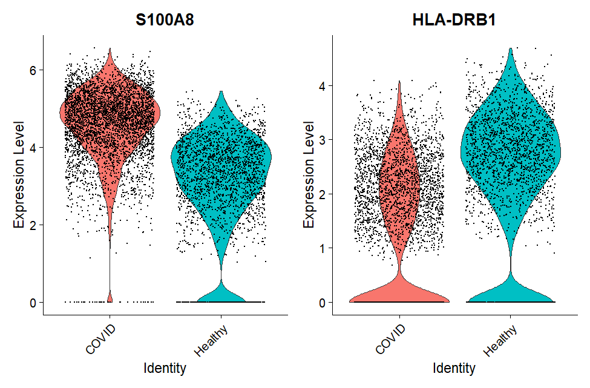

Cell identity
Which immune-cell populations can be recovered from the PBMC single-cell dataset using unsupervised clustering and canonical marker genes?
Bioinformatics / Single-Cell Transcriptomics
Single-cell RNA-seq analysis of peripheral blood immune cells from COVID-19 patients and healthy controls, using Seurat to identify immune-cell populations and investigate condition-associated transcriptional differences.

DatasetGSE150728
Cells81,353
Samples13
Populations19
Overview
Bulk RNA sequencing measures average gene expression across mixed cell populations, potentially masking changes occurring within specific immune-cell populations. Single-cell RNA sequencing resolves expression at the individual-cell level, allowing immune populations and their transcriptional states to be investigated separately.
This project applies a standard single-cell analysis pipeline to publicly available PBMC data from COVID-19 patients and healthy controls, with particular focus on immune-cell composition and transcriptional changes within monocytes.
Research question
Which immune-cell populations can be recovered from the PBMC single-cell dataset using unsupervised clustering and canonical marker genes?
Are particular immune-cell populations proportionally enriched or depleted in COVID-19 samples?
How does gene expression within classical monocytes differ between COVID-19 patients and healthy controls?
Do inflammatory and antigen-presentation-associated genes show coordinated transcriptional changes?
Workflow
Retrieved publicly available PBMC single-cell RNA-seq data from the NCBI Gene Expression Omnibus.
GEO GSE150728Filtered low-quality cells, probable empty droplets and problematic cells using detected-feature counts and mitochondrial read content.
SeuratLog-normalized expression, selected highly variable genes, scaled expression and performed PCA before constructing the neighbourhood graph.
View methodsApplied graph-based clustering and UMAP, then annotated populations using canonical immune-cell marker genes.
View UMAPCompared immune-cell composition and performed condition-specific differential expression within classical monocytes.
Key findingsCellular landscape
UMAP visualization of the annotated PBMC landscape. Nineteen immune-cell populations were identified using cluster-specific expression patterns and canonical markers.
Monocyte expression

Classical monocytes from COVID-19 samples showed increased expression of inflammatory S100-family genes alongside reduced expression of several antigen-presentation-associated genes.
Analysis scale
Approximately 157,000 raw droplets were processed across thirteen samples. After quality-control filtering, 81,353 cells were retained for downstream analysis.
The final dataset included seven COVID-19 samples and six healthy controls.
Key findings
Classical monocytes from COVID-19 samples showed increased expression of inflammatory alarmin genes including S100A8, S100A9 and S100A12.
HLA-DRB1, HLA-DQB1 and CD74 showed reduced expression in COVID-associated classical monocytes, alongside reduced HLA-B expression.
A distinct interferon-stimulated monocyte population marked by genes including IFI27, IFI6 and IFITM3 was observed predominantly in COVID-19 samples.
Together, the observed expression patterns indicate an association between COVID-19 status and a more inflammatory monocyte transcriptional state with reduced expression of antigen-presentation-associated genes.
Exploratory result
An interferon-stimulated monocyte population was nearly absent from healthy samples but appeared at variable levels across multiple COVID-19 samples.
However, the sample-level difference did not reach statistical significance in the Wilcoxon rank-sum comparison (p = 0.29). Given the small cohort and substantial patient-to-patient heterogeneity, this result is treated as exploratory rather than confirmatory.
Analysis code
# Quality-control filtering
combined_seurat <- subset(
combined_seurat,
subset =
nFeature_RNA > 250 &
nFeature_RNA < 2500 &
percent.mt < 20
)
combined_seurat <- NormalizeData(
combined_seurat,
normalization.method = "LogNormalize",
scale.factor = 10000
)
combined_seurat <- FindVariableFeatures(
combined_seurat,
selection.method = "vst",
nfeatures = 2000
)# PCA, graph construction and clustering
combined_seurat <- ScaleData(
combined_seurat
)
combined_seurat <- RunPCA(
combined_seurat
)
combined_seurat <- FindNeighbors(
combined_seurat,
dims = 1:20
)
combined_seurat <- FindClusters(
combined_seurat,
resolution = 0.5
)
combined_seurat <- RunUMAP(
combined_seurat,
dims = 1:20
)# Identify cluster marker genes
cluster_markers <- FindAllMarkers(
combined_seurat,
only.pos = TRUE
)
DimPlot(
combined_seurat,
reduction = "umap",
group.by = "cell_type",
label = TRUE,
repel = TRUE
) + NoLegend()# Compare conditions within monocytes
monocyte_de <- FindMarkers(
monocyte_subset,
ident.1 = "COVID",
ident.2 = "Healthy",
group.by = "condition"
)
VlnPlot(
monocyte_subset,
features = c(
"S100A8",
"HLA-DRB1"
),
group.by = "condition",
pt.size = 0.1
)Limitations
The study contains seven COVID-19 samples and six healthy controls, limiting statistical power for patient-level comparisons.
Individual cells from the same patient are correlated and should not be interpreted as fully independent biological replicates.
Severity metadata was not available for the analyzed COVID-19 samples, so the project does not distinguish mild from severe disease.
A small red-blood-cell contamination cluster was detected and excluded from biological interpretation.
Future work
Aggregate expression at the patient level before differential-expression testing to reduce pseudo-replication.
Incorporate biological replicate structure directly into statistical testing and downstream interpretation.
Extend the analysis to datasets containing explicit disease-severity and clinical metadata.
Explore transcriptional-state dynamics using intronic and exonic read information where compatible data are available.
Project skills
Processing and interpreting high-dimensional scRNA-seq data through quality control, normalization, clustering and dimensionality reduction.
Combining unsupervised clustering with canonical marker expression to identify biologically meaningful immune-cell populations.
Distinguishing cell-level observations from biological replicates and explicitly considering cohort size, pseudo-replication and non-significant findings.
Reproducible analysis using R, Seurat, ggplot2, dplyr, tidyr and structured bioinformatics workflows.